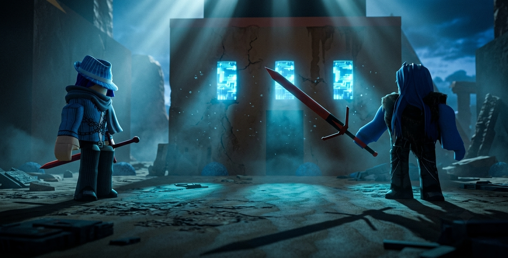

The Varkuun Incident — Chapters 1–5

Chapter 1 — The Astral Ruins
The Guardians arrived on Varkuun after Seron’s warning. The astral capital lay in ruins — shattered forges, broken weapon‑cores, and scorch marks carved into the sand. Tom Letanio scanned the area with his visor while Kole Rogue inspected the destroyed forge pillars.
Ral Awakening felt uneasy. Something about the destruction felt intentional — targeted.
Chapter 2 — The Missing Arsenal
Tom discovered fragments of astral metal scattered across the ground. Kole recognized them immediately: pieces of the Crimson Fear Arsenal. The legendary weapons forged by Varkuun’s royal line were gone.
Ral tightened his grip on his own crimson‑glowing blade. He didn’t know why, but the sword felt heavier in his hand — as if reacting to the destruction around him.
Chapter 3 — The Royal Arrival
A spiral of golden astral dust formed on the ridge above them. The sand parted as Princess Anuket Nebet‑Hut descended, her armor glowing with royal astral light. She approached the Guardians with authority and urgency.
Kole bowed. Tom followed. Ral stood awkwardly, unsure of how to greet Varkuun royalty.
Chapter 4 — The Crimson Fear
Anuket scanned the ruins — then froze. Her eyes locked onto Ral’s hand. The Crimson Fear Sword pulsed with red astral energy.
Anuket: “That sword… how do you possess it?”
Ral swallowed. “I bought it. From a black market dealer in the Guardia City underworld.”
Anuket stared — shocked, confused, and impressed. A Crimson Fear in the hands of an Aetherian was unheard of. And Ral wielded it naturally, confidently.
Chapter 5 — The Crush
Anuket circled Ral slowly, examining his stance, the way he held the blade, the natural confidence in his grip. Her expression softened.
Anuket: “You wield it well… better than most Varkuun warriors.”
Kole raised an eyebrow. Tom smirked.
Anuket’s gaze lingered on Ral longer than expected — admiration mixing with curiosity. A spark of interest formed behind her warrior composure.
Ral sheathed the sword, oblivious.
Anuket looked away quickly, trying to hide the faint blush across her cheeks.
Kole whispered to Tom: “She’s crushing on him.”
Tom nodded. “Hard.”
End of Chapters 1–5
The four stood together — Guardians and Varkuun royalty — ready to uncover the truth behind the Varkuun Incident and recover the stolen Crimson Fear arsenal.